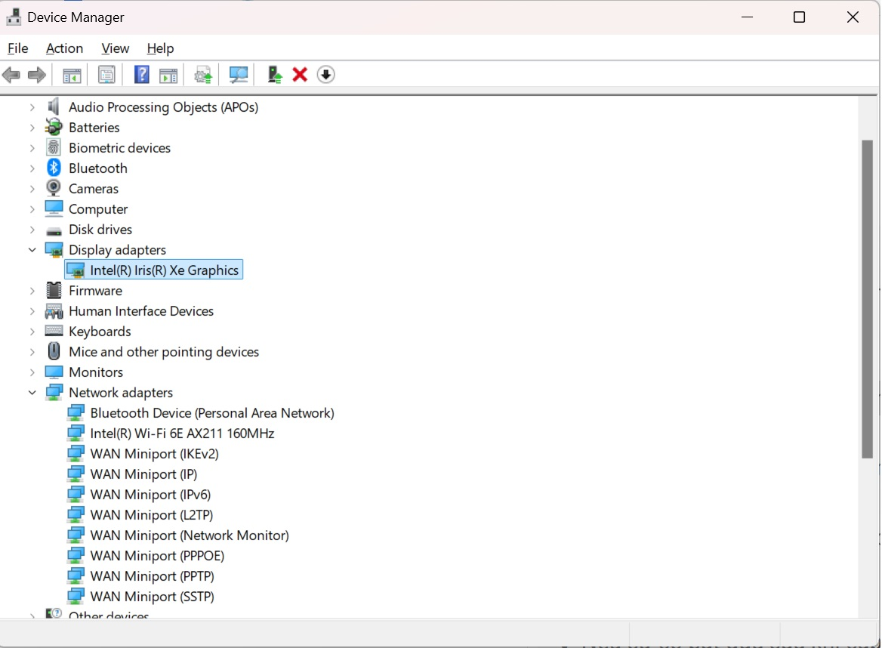

How to Fix Windows 11 RDP Freezing & Lagging Issues
Are you experiencing Windows 11 RDP freezing issues? Many users report that their remote desktop connection freezes, making it impossible to work efficiently. Whether your RDP connection freezes occasionally or your remote desktop keeps freezing on Windows 11 frequently, this guide will help you diagnose and fix the issue.
In this article, we will explore the common causes of RDP freezing, provide three quick fixes, introduce two advanced solutions, and finally suggest an alternative remote access tool—UltraViewer.
Why Does Windows 11 RDP Keep Freezing? Common Causes Explained
Before diving into solutions, let's identify the most frequent reasons why remote desktop freezes on Windows 11:
1. Unstable Network Connection
A slow or unstable network can cause RDP connection freezes, making remote access unreliable. This is especially common when using Wi-Fi instead of a wired connection.
2. Improper RDP Configuration
Incorrect Remote Desktop settings may lead to lag or freezing. Features like RemoteFX and persistent bitmap caching might not be optimized for performance.
3. Outdated GPU or Network Drivers
If your graphics or network drivers are outdated or incompatible, you may experience remote desktop freezing issues, especially after a Windows update.
4. Conflicting Windows Updates
Some Windows 11 updates can introduce bugs that affect RDP connection stability. If the issue started after an update, rolling back may help.
5. Background Services Consuming Resources
Unnecessary background services or applications consuming CPU and memory can slow down your system and impact RDP performance.
Quick Fixes: 3 Simple Ways to Solve RDP Freezing Issues
If your remote desktop connection freezes intermittently, try these quick solutions first to restore smooth performance. We will cover essential fixes such as optimizing your network, updating drivers, and adjusting RDP settings to eliminate lag and freezing issues efficiently.
1. Optimize Network Connection for RDP
A stable internet connection is essential for smooth RDP sessions. Follow these steps:
- Ensure your internet connection is stable by checking your network status in Windows settings.
- Use a wired Ethernet connection instead of Wi-Fi to reduce latency.
- Run a ping test to check network stability: Ideally, latency should be below 50ms for a smooth RDP experience. Values above 100ms may cause noticeable lag, and anything exceeding 200ms can lead to severe performance issues.
ping google.com -t
If you notice high latency spikes, consider changing your ISP or upgrading your connection.
2. Update GPU and Network Adapter Drivers
Outdated drivers can cause RDP connection freezes. To update:

- Open Device Manager (
devmgmt.msc). - Locate Display Adapters and Network Adapters.
- Right-click each and select Update driver.
- If the issue started after an update, try rolling back the driver.
3. Adjust Remote Desktop Settings
Optimizing Remote Desktop settings can significantly enhance performance and reduce remote desktop freezing on Windows 11. By fine-tuning these configurations, you can minimize latency, improve stability, and ensure a smoother remote access experience. Follow these steps to optimize your settings:
Step 1: Enable Persistent Bitmap Caching

Persistent Bitmap Caching stores frequently used images and interface elements locally, reducing the amount of data that needs to be transferred over the network.
✔ Open Remote Desktop Connection (mstsc.exe).
✔ Click Show Options → Navigate to the Experience tab.
✔ Check the box for Persistent Bitmap Caching.
✔ Click OK to apply changes.
Step 2: Lower Display Resolution
A high display resolution can consume significant bandwidth and processing power, leading to lag and freezing.
✔ Open Remote Desktop Connection.
✔ Click Show Options → Go to the Display tab.
✔ Lower the Display Configuration slider to reduce resolution.
✔ Click Connect to apply settings.
Step 3: Adjust Color Depth

Reducing color depth from 32-bit to 16-bit decreases data transfer load, improving responsiveness.
✔ In the Display tab of Remote Desktop Connection, find Color Depth settings.
✔ Change the setting from Highest Quality (32-bit) to High Color (16-bit).
✔ Apply changes and reconnect.
Step 4: Disable Unnecessary Visual Effects
Windows animations and visual effects can slow down Remote Desktop performance. Turning them off helps conserve resources.
✔ Press Win + R, type sysdm.cpl, and press Enter.
✔ Go to the Advanced tab → Click Settings under Performance.
✔ Select Adjust for best performance or manually disable effects like Smooth edges of screen fonts and Animate windows when minimizing and maximizing.
✔ Click Apply and OK.
Step 5: Turn Off Printer Redirection (If Not Needed)
Printer Redirection can consume extra bandwidth and cause stability issues. Disable it if you don’t need to print remotely.
✔ Open Remote Desktop Connection and click Show Options.
✔ Navigate to the Local Resources tab.
✔ Under Local devices and resources, uncheck Printers.
✔ Click OK and reconnect.
By applying these optimizations, you can improve RDP connection stability and reduce instances where remote desktop keeps freezing on Windows 11. 🚀
Windows 11 RDP Freezing: 4 Advanced Fixes to Restore Smooth Performance
If the problem continues despite applying quick fixes, these advanced solutions may help resolve persistent remote desktop freezing on Windows 11. By modifying system configurations and optimizing connection settings, you can significantly enhance stability and ensure a seamless RDP connection without lag or interruptions.
1. Modify Group Policy Settings for RDP Performance
Tweaking Group Policy settings can enhance RDP performance and prevent RDP connection freezes. Adjusting these settings allows for better resource allocation and improves stability, reducing instances where remote desktop freezes on Windows 11 unexpectedly.

✔ Open Group Policy Editor (Win+ R > gpedit.msc).
✔ Navigate to: Computer Configuration → Administrative Templates → Windows Components → Remote Desktop Services → Remote Desktop Session Host → Remote Session Environment
✔ Enable "Optimize visual experience for RDP connections".
✔ Disable WDDM graphics display driver if experiencing GPU-related lag.
✔ Restart your system to apply changes.
2. Advanced Fix: Switch from UDP to TCP Protocol
By default, RDP uses UDP for better performance, but in unstable network environments, switching to TCP can provide a more stable connection and resolve RDP freezing issues.
Method 1: Using Registry Editor (Recommended)
✔ Open Registry Editor (type "regedit" in the Start menu)
✔ Navigate to: HKEY_LOCAL_MACHINE\\SOFTWARE\\Policies\\Microsoft\\Windows NT\\Terminal Services\\Client
- If the path doesn't exist, create the missing keys
✔ Create a new DWORD (32-bit) Value named fClientDisableUDP and set its value to 1
✔ Restart your computer to apply changes
Method 2: Using PowerShell
✔ Open PowerShell with administrator privileges
✔ Run the following command:
New-ItemProperty -Path "HKLM:\\SOFTWARE\\Policies\\Microsoft\\Windows NT\\Terminal Services\\Client" -Name "fClientDisableUDP" -Value 1 -PropertyType DWORD -Force
✔ Restart your computer to apply changes
3. Optimize MTU Settings for Network Connection
Adjusting the Maximum Transmission Unit (MTU) can significantly improve RDP stability by preventing packet fragmentation.
✔ Open Command Prompt with administrator privileges
✔ Run the following command to find the optimal MTU value:
ping google.com -f -l 1472
✔ Gradually decrease the value after -l until you no longer see "Packet needs to be fragmented"
✔ Once you find the appropriate value, set the MTU for your network adapter:
netsh interface ipv4 set subinterface "Ethernet" mtu=1458 store=persistent
(Replace "Ethernet" with your actual network adapter name and 1458 with your determined value)
4. Disable Unnecessary Redirection Features
Reducing the number of redirected resources can decrease the RDP connection load and prevent freezing.
✔ Open Remote Desktop Connection (mstsc.exe)
✔ Click on Show Options
✔ Go to the Local Resources tab
✔ Uncheck Printers and Clipboard if not needed
✔ Go to the Experience tab and uncheck features like Menu and window animation
✔ Connect again to apply changes
By implementing these advanced fixes, you should see a significant reduction in Windows 11 RDP freezing issues and experience a more stable remote desktop connection.
Alternative Solution: UltraViewer – A Reliable RDP Alternative for Windows 11 RDP Freezing Issues
If you continue facing Windows 11 RDP freezing issues despite trying multiple fixes, switching to a more reliable remote desktop solution like UltraViewer is a great option. Unlike traditional RDP, UltraViewer ensures stable and uninterrupted remote sessions, minimizing remote desktop connection freezes and RDP connection freezes. With optimized performance, secure access, and an intuitive setup, UltraViewer provides a seamless alternative to standard RDP solutions without unnecessary complexity.

Why Choose UltraViewer Over RDP?
✔ Stable & Fast Connections – UltraViewer provides smooth remote access without freezing or lag issues common in RDP.
✔ Easy Setup – No need for complex network configurations; simply install and connect.
✔ Better Security – Unlike RDP, UltraViewer minimizes security risks associated with open ports and brute force attacks.
✔ Multi-Device Support – Compatible with Windows operating systems, allowing seamless remote access across different devices.
✔ Free for Personal Use – Unlike many paid remote desktop solutions, UltraViewer offers a free version with robust features.
If you're tired of RDP connection freezes, UltraViewer is an excellent alternative that ensures smooth, secure, and efficient remote access.
🚀 Download UltraViewer today and experience seamless remote desktop control without interruptions!
Conclusion
In this guide, we have examined the common causes of Windows 11 RDP freezing and provided three quick fixes along with two advanced solutions to resolve the issue. Additionally, we introduced an advanced fix (UDP/TCP switch) to enhance connection stability. If you need a stable, efficient, and user-friendly remote access tool, UltraViewer is an excellent alternative to avoid RDP-related disruptions.
💡 Try UltraViewer now and enjoy seamless remote desktop connections!


Write comments (Cancel Reply)